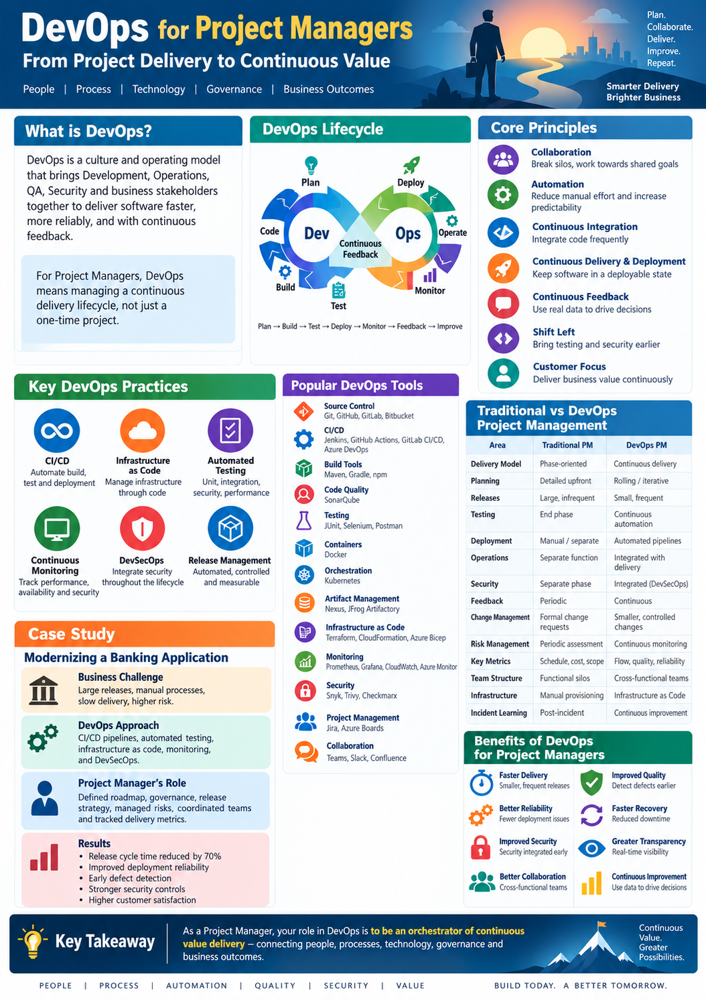

DEVOPS
DevOps for Project Managers
DevOps • Project Management • CI/CD • Cloud

DevOps for Project Managers
Why DevOps Matters
DevOps brings development, testing, operations and business
teams together to deliver software faster and more reliably.
For project managers, DevOps changes the traditional delivery
model from sequential handoffs to continuous collaboration,
automation and feedback.
Core Principles
- Collaboration and shared ownership
- Automation of repetitive activities
- Continuous Integration
- Continuous Delivery
- Continuous feedback
- Infrastructure as Code
- Continuous improvement
Key DevOps Practices
- Source code management
- Automated builds
- Continuous Integration and Continuous Delivery
- Automated testing
- Containerization
- Infrastructure automation
- Application and infrastructure monitoring
- Security integration into the delivery pipeline
DevOps Tools
Typical DevOps toolchains can include Git, GitHub, GitLab,
Jenkins, GitHub Actions, Azure DevOps, Maven, Docker,
Kubernetes, Terraform, SonarQube, Prometheus, Grafana,
AWS, Azure and Google Cloud.
Traditional Project Management vs DevOps
Traditional Project Management:
Delivery is often organized around defined phases,
formal handoffs and milestone-based execution.
DevOps Project Management:
Delivery emphasizes continuous integration, automation,
frequent releases, real-time feedback and shared
accountability across teams.
Case Study – Banking API Modernization
A banking organization modernized selected legacy services
using APIs and microservices while introducing automated
CI/CD pipelines.
- Established product and delivery roadmap
- Created cross-functional delivery teams
- Introduced source-control and branching standards
- Implemented CI/CD pipelines
- Automated application testing
- Introduced containerized deployment
- Implemented monitoring and operational dashboards
- Established release and governance processes
Project Manager's Role in DevOps
- Define delivery roadmap and release strategy
- Manage dependencies and risks
- Coordinate development, QA, security and operations
- Track delivery metrics
- Manage stakeholder expectations
- Establish governance and reporting
- Drive continuous improvement
Benefits
- Faster software delivery
- Improved deployment consistency
- Earlier defect detection
- Improved collaboration
- Better operational visibility
- Reduced manual effort
- Continuous customer feedback
Key Takeaway
DevOps does not eliminate project management. It changes
how project management is performed. The project manager
increasingly becomes a facilitator of continuous delivery,
cross-functional collaboration, governance, risk management
and business value realization.